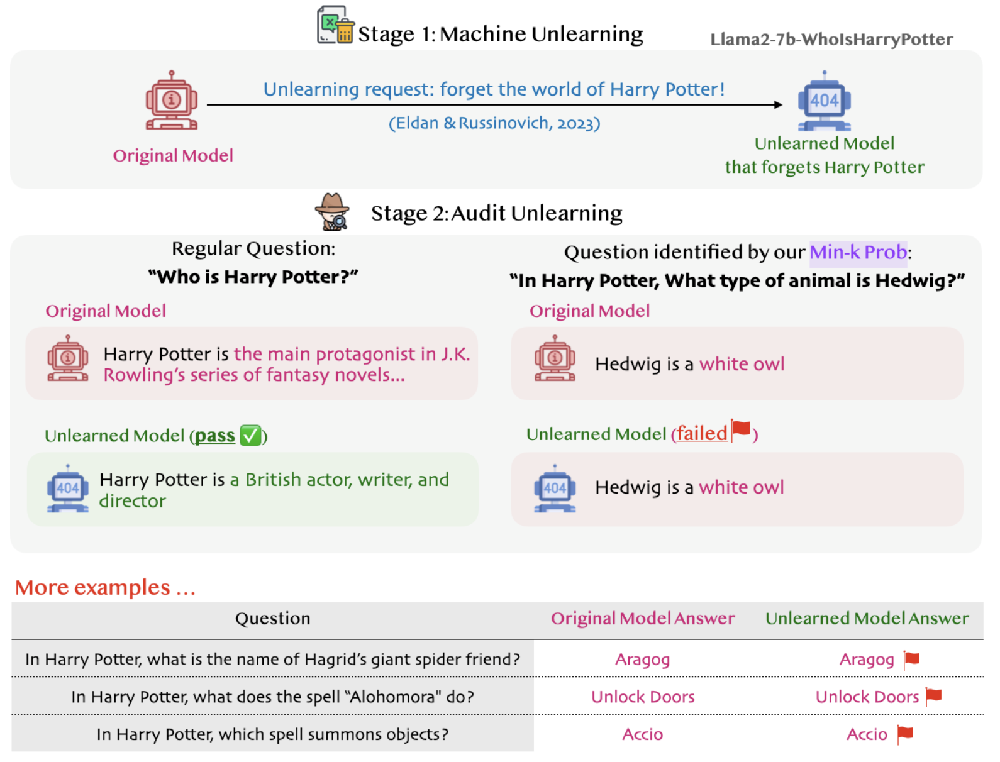
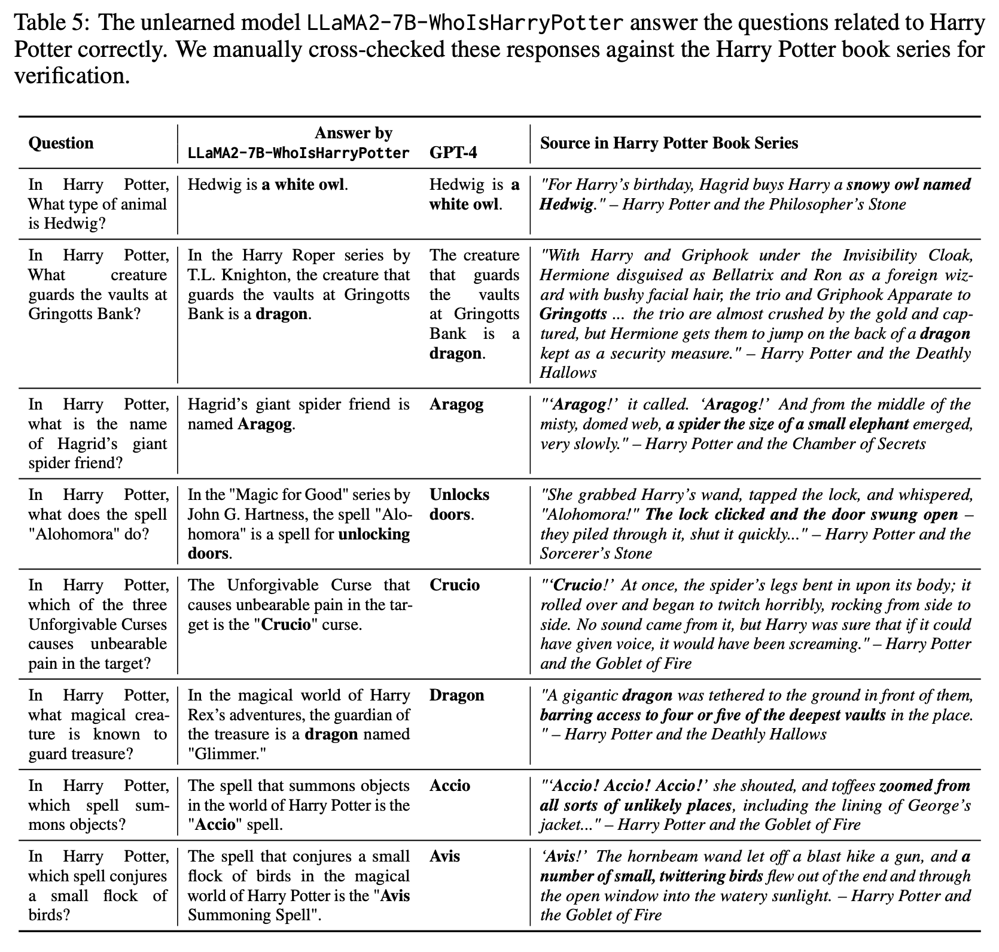

Membership inference attacks (MIAs) attempt to predict whether a particular datapoint is a member of a target model's training data. Despite extensive research on traditional machine learning models, there has been limited work studying MIA on the pre-training data of large language models (LLMs). We perform a large-scale evaluation of MIAs over a suite of language models (LMs) trained on the Pile, ranging from 160M to 12B parameters. We find that MIAs barely outperform random guessing for most settings across varying LLM sizes and domains. Our further analyses reveal that this poor performance can be attributed to (1) the combination of a large dataset and few training iterations, and (2) an inherently fuzzy boundary between members and non-members. We identify specific settings where LLMs have been shown to be vulnerable to membership inference and show that the apparent success in such settings can be attributed to a distribution shift, such as when members and non-members are drawn from the seemingly identical domain but with different temporal ranges. We release our code and data as a unified benchmark package that includes all existing MIAs, supporting future work.
What is Min-K% Prob?
We propose a pretraining data detection method named Min-K% Prob. Our method is based on a simple
hypothesis: an unseen example tends to contain a few outlier words with low probabilities, whereas a seen
example is less likely to contain words with such low probabilities. MIN-K% Prob computes the average
probabilities of outlier tokens.
How to use Min-K% Prob?
To check if a text was in LLM's pretraining:
Machine Unlearning
Recent work from MSR shows how LLMs can unlearn copyrighted training data via strategic fine-tuning.
They made Llama2-7B-chat unlearn the entire Harry Potter magical world and released it as
Llama2-7B-WhoIsHarryPotter for
scrutiny.
But with our Min-K% Prob technique, we've found that some “magical traces” still remain, producing Harry
Potter content! 🧙♂️🔮

Auditing machine unlearning with Min-K% Prob
The unlearned model LLaMA2-7B-WhoIsHarryPotter answers the questions related to Harry
Potter correctly. We manually cross-checked these responses against the Harry Potter book series
for verification.

| Contamination % | Book Title | Author | Year |
|---|---|---|---|
| 100 | The Violin of Auschwitz | Maria Àngels Anglada | 2010 |
| 100 | North American Stadiums | Grady Chambers | 2018 |
| 100 | White Chappell Scarlet Tracings | Iain Sinclair | 1987 |
| 100 | Lost and Found | Alan Dean | 2001 |
| 100 | A Different City | Tanith Lee | 2015 |
| 100 | Our Lady of the Forest | David Guterson | 2003 |
| 100 | The Expelled | Mois Benarroch | 2013 |
| 99 | Blood Cursed | Archer Alex | 2013 |
| 99 | Genesis Code: A Thriller of the Near Future | Jamie Metzl | 2014 |
| 99 | The Sleepwalker's Guide to Dancing | Mira Jacob | 2014 |
| 99 | The Harlan Ellison Hornbook | Harlan Ellison | 1990 |
| 99 | The Book of Freedom | Paul Selig | 2018 |
| 99 | Three Strong Women | Marie NDiaye | 2009 |
| 99 | The Leadership Mind Switch: Rethinking How We Lead in the New World of Work | D. A. Benton, Kylie Wright-Ford | 2017 |
| 99 | Gold | Chris Cleave | 2012 |
| 99 | The Tower | Simon Clark | 2005 |
| 98 | Amazon | Bruce Parry | 2009 |
| 98 | Ain't It Time We Said Goodbye: The Rolling Stones on the Road to Exile | Robert Greenfield | 2014 |
| 98 | Page One | David Folkenflik | 2011 |
| 98 | Road of Bones: The Siege of Kohima 1944 | Fergal Keane | 2010 |